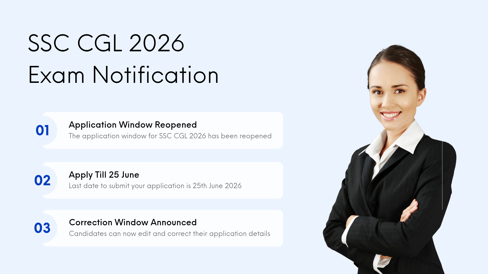

सरकारी नौकरी की तैयारी कर रहे लाखों युवाओं के लिए कर्मचारी चयन आयोग (SSC) ने एक महत्वपूर्ण निर्णय लिया है। आयोग ने Combined Graduate Level Examination (SSC CGL) 2026 के ऑनलाइन आवेदन फॉर्म की विंडो एक बार फिर खोलने की घोषणा की है। यह फैसला उन उम्मीदवारों के हित में लिया गया है जो किसी कारणवश निर्धारित समय सीमा के भीतर आवेदन नहीं कर पाए थे।
SSC CGL देश की सबसे लोकप्रिय प्रतियोगी परीक्षाओं में से एक है। हर वर्ष लाखों अभ्यर्थी केंद्र सरकार के विभिन्न मंत्रालयों और विभागों में नौकरी पाने के लिए इस परीक्षा में आवेदन करते हैं। ऐसे में आवेदन की अंतिम तिथि निकल जाने के बाद भी आवेदन का मौका मिलना उम्मीदवारों के लिए किसी राहत से कम नहीं है।
आयोग द्वारा जारी आधिकारिक नोटिस के अनुसार आवेदन विंडो अब दोबारा खोली जाएगी और इच्छुक उम्मीदवार 25 जून 2026 तक अपना आवेदन जमा कर सकेंगे।
SSC CGL 2026 के लिए Reopened Application Window अब बंद हो चुकी है। जिन उम्मीदवारों ने निर्धारित समय के भीतर आवेदन सफलतापूर्वक जमा कर दिया है, उन्हें अब Application Status, Admit Card, Exam City Slip और Tier-I परीक्षा से जुड़े आगामी आधिकारिक अपडेट का इंतजार करना चाहिए।
SSC ने अपने नोटिस में बताया है कि CGL 2026 के लिए आवेदन प्रक्रिया 21 मई 2026 से 22 जून 2026 तक चली थी। इस दौरान 28 लाख से अधिक उम्मीदवारों ने सफलतापूर्वक आवेदन किया।
हालांकि आयोग को बड़ी संख्या में उम्मीदवारों की ओर से आवेदन प्राप्त हुए, जिनमें बताया गया कि वे तकनीकी कारणों, दस्तावेजों की कमी या अन्य व्यक्तिगत समस्याओं के कारण समय पर आवेदन जमा नहीं कर पाए। इन अभ्यर्थियों की मांग को ध्यान में रखते हुए SSC ने आवेदन प्रक्रिया को दो दिनों के लिए पुनः खोलने का निर्णय लिया है।
| विवरण | तिथि |
|---|---|
| आवेदन प्रक्रिया शुरू | 21 मई 2026 |
| पुरानी अंतिम तिथि | 22 जून 2026 |
| आवेदन विंडो पुनः शुरू | 23 जून 2026 |
| नई अंतिम तिथि | 25 जून 2026 |
| फीस भुगतान की अंतिम तिथि | 26 जून 2026 |
| Correction Window | 01 जुलाई से 03 जुलाई 2026 |
यदि आप इनमें से किसी भी श्रेणी में आते हैं तो अब आपके पास आवेदन करने का अंतिम अवसर है।
SSC ने स्पष्ट किया है कि आवेदन की अंतिम तिथि 25 जून 2026 होगी, लेकिन फीस भुगतान की सुविधा 26 जून 2026 रात 11 बजे तक उपलब्ध रहेगी।
इसलिए उम्मीदवारों को सलाह दी जाती है कि वे आवेदन और शुल्क भुगतान दोनों कार्य समय रहते पूरा कर लें।
आवेदन प्रक्रिया पूरी होने के बाद SSC उम्मीदवारों को Correction Window की सुविधा भी देगा।
Correction Window 01 जुलाई 2026 से 03 जुलाई 2026 तक खुली रहेगी। इस दौरान अभ्यर्थी आवेदन फॉर्म में हुई छोटी-मोटी त्रुटियों को सुधार सकेंगे।
SSC CGL परीक्षा के माध्यम से केंद्र सरकार के कई प्रतिष्ठित विभागों और मंत्रालयों में भर्ती की जाती है। इसमें Income Tax Department, CBI, CBDT, CBIC, Auditor, Accountant और Inspector जैसे पद शामिल होते हैं।
इसी वजह से हर वर्ष लाखों उम्मीदवार इस परीक्षा का इंतजार करते हैं और प्रतियोगिता भी काफी अधिक रहती है।
SSC CGL 2026 की आवेदन प्रक्रिया पूरी हो चुकी है। जिन उम्मीदवारों ने सफलतापूर्वक आवेदन जमा कर दिया है, उन्हें अब अगले चरणों की तैयारी पर ध्यान देना चाहिए।
Education Update Hub पर SSC CGL 2026 Admit Card, Exam City Slip, Answer Key, Result तथा अन्य सभी महत्वपूर्ण अपडेट समय-समय पर प्रकाशित किए जाएंगे।
SSC CGL 2026 की आवेदन प्रक्रिया अब पूरी हो चुकी है। जिन उम्मीदवारों ने सफलतापूर्वक आवेदन किया है, उन्हें अब आगामी परीक्षा चरणों की तैयारी शुरू कर देनी चाहिए। Application Status, Admit Card और अन्य महत्वपूर्ण सूचनाओं के लिए केवल SSC की आधिकारिक वेबसाइट पर ही भरोसा करें।
हाँ। Reopened Application Window निर्धारित अंतिम तिथि के बाद बंद हो चुकी है।
नहीं। वर्तमान में आवेदन प्रक्रिया समाप्त हो चुकी है। यदि आयोग भविष्य में कोई नई सूचना जारी करता है, तो वही मान्य होगी।
अब उम्मीदवारों को Application Status, Exam City Slip, Admit Card और Tier-I परीक्षा से जुड़े अपडेट का इंतजार करना चाहिए।
Admit Card परीक्षा से पहले SSC द्वारा आधिकारिक वेबसाइट पर जारी किया जाएगा।
SSC से संबंधित सभी आधिकारिक सूचनाएं केवल आधिकारिक वेबसाइट पर जारी की जाती हैं।